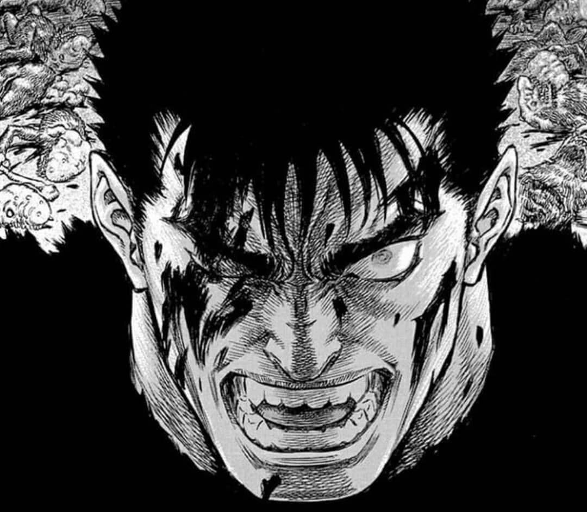
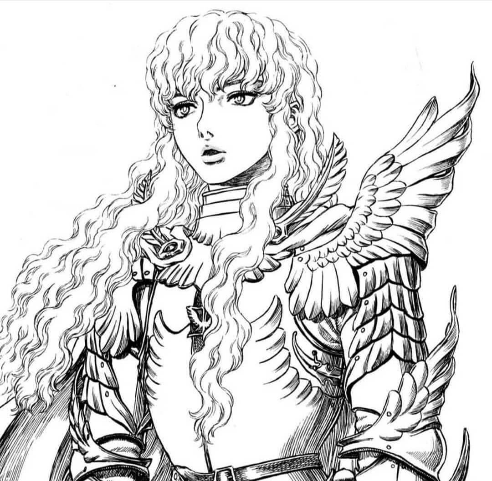
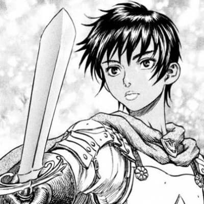
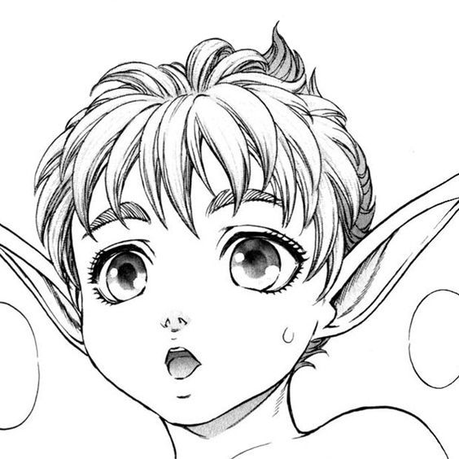
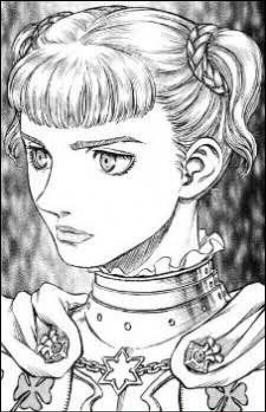

Personajes
Guts

Guts, también conocido como "El Espadachín Negro", es el protagonista
central de Berserk. Criado en un entorno brutal y marcado por una
infancia traumática, Guts se convierte en un guerrero feroz y
habilidoso. Su vida da un giro radical tras el evento devastador del
Eclipse, que le lleva a una búsqueda de venganza implacable contra los
demonios conocidos como apóstoles. A lo largo de la historia, Guts
lucha con su propia oscuridad interior y busca su lugar en un mundo
despiadado.
Griffith

Griffith, carismático y ambicioso, es el líder del grupo de
mercenarios conocido como los "Halcones". A lo largo de la historia,
su obsesión por alcanzar el poder y la gloria lo lleva a tomar
decisiones trascendentales que desencadenan eventos devastadores en la
vida de Guts y en el mundo que les rodea. Griffith representa un
complejo estudio de personaje sobre ambición y sacrificio personal.
Casca

Casca, una valiente y dedicada comandante de los Halcónes, es un
personaje clave en la historia de Berserk. Ha pasado por muchas
pruebas y tribulaciones, incluyendo ser testigo del brutal evento del
Eclipse. A lo largo de la historia, su relación con Guts se complica y
evoluciona de formas inesperadas, proporcionando capas de profundidad
a su personaje.
Puck

Puck es un pequeño elfo que se une a Guts en su travesía. Aunque
aporta humor y ligereza al oscuro mundo de Berserk, también desempeña
un papel crucial al brindar apoyo emocional y amistad a Guts en
momentos de desesperación.
Farnese

Farnese, inicialmente una noble con una vida acomodada, encuentra su
propósito al unirse a la Inquisición. A lo largo de la historia, su
personaje experimenta una evolución significativa mientras lucha con
sus creencias y encuentra su verdadera identidad en un mundo
despiadado.